I am a research scientist at Adobe Research. I am interested in human-centered AI with a focus on empowering data analysts with visualization and machine learning technologies. I transfer research prototypes to Adobe's digital marketing solutions.
I received my Ph.D. from University of Maryland, College Park in 2018, advised by Ben Shneiderman and Catherine Plaisant. I earned my bachelor's degree from Zhejiang University, Chu Kochen Honors Program. Previously, I have worked at Alibaba, Tencent, and IBM Research.
Contact: | Google Scholar |
Software: EventFlow | EventAction | PeerFinder | CoCo
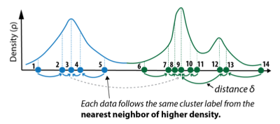
Real-Time Clustering for Large Sparse Online Visitor Data
WWW Proceedings of The Web Conference, 2020.
Download: [pdf]
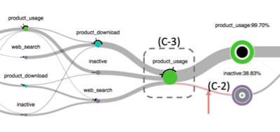
Interactive Event Sequence Prediction for Marketing Analysts
CHI CHI Extended Abstracts on Human Factors in Computing Systems, 2020.
Download: [pdf]
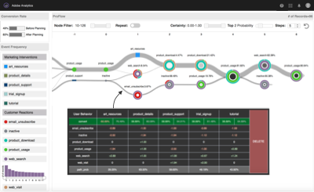
Visualizing Uncertainty and Alternatives in Event Sequence Predictions
CHI Proceedings of the SIGCHI Conference on Human Factors in Computing Systems, 2019.
Download: [pdf]
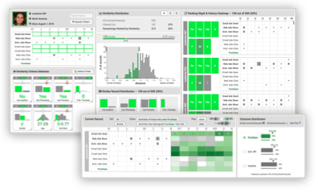
EventAction: A Visual Analytics Approach to Explainable
Recommendation for Event Sequences
TiiS ACM Transactions on Interactive Intelligent Systems, 2019.
Download: [pdf] | TiiS Best Paper Award
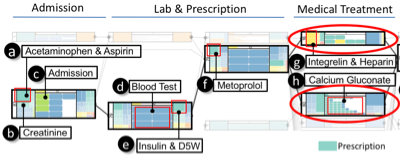
Visual Progression Analysis of Event Sequence Data
TVCG IEEE Transactions on Visualization and Computer Graphics, 2019.
Download: [pdf]
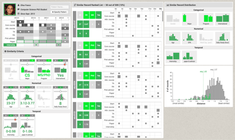
Finding Similar People to Guide Life Choices: Challenge, Design, and Evaluation
CHI Proceedings of the SIGCHI Conference on Human Factors in Computing Systems, 2017.
Download: [pdf] [software] [video] | Best Paper Honorable Mention
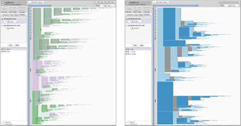
Coping with Volume and Variety in Temporal Event Sequences:
Strategies for Sharpening Analytic Focus
TVCG IEEE Transactions on Visualization and Computer Graphics, 2017.
Download: [pdf] [software]
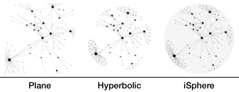
iSphere: Focus+Context Sphere Visualization for Interactive Large Graph Exploration
CHI Proceedings of the SIGCHI Conference on Human Factors in Computing Systems, 2017.
Download: [pdf] [demo] [quad-tree]
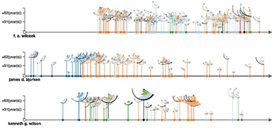
Episogram: Visual Summarization of Egocentric Social Interactions
CGA IEEE Computer Graphics and Applications, 2016.
Download: [pdf] [video] | Feature Article
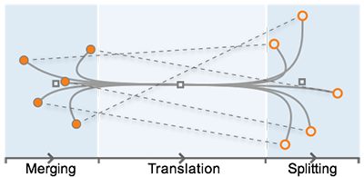
Trajectory Bundling for Animated Transitions
CHI Proceedings of the SIGCHI Conference on Human Factors in Computing Systems, 2015.
Download: [pdf] [video]
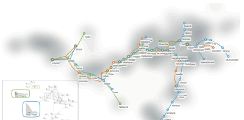
Visual Analysis of Set Relations in a Graph
CGF Computer Graphics Forum (Proc. EuroVis), 2013.
Download: [pdf]
| Apr 2018 - Now | Adobe Research, San Jose, CA | |
| Research Scientist, Big Data Experience Lab | ||
| Jan 2014 - Apr 2018 | University of Maryland, College Park, MD | |
| Research Assistant, Human-Computer Interaction Lab | ||
| Summer 2017 | Adobe Research, San Jose, CA | |
| Research Intern, Big Data Experience Lab | ||
| Summer 2014, 2015 | IBM Thomas J. Watson Research Center, Yorktown Heights, NY | |
| Research Intern, Graph Computing and Social Cognitive Analytics Group | ||
| Sept 2013 - Dec 2013 | University of Maryland, College Park, MD | |
| Teaching Assistant, Department of Computer Science | ||
| Sept 2012 - Mar 2013 | Hong Kong University of Science and Technology, Hong Kong | |
| Research Intern, VisLab | ||
| Summer 2012 | Tencent, Shanghai, China | |
| Software Engineer Intern, Interactive Entertainment Group | ||
| Summer 2011 | Alibaba, Hangzhou, China | |
| Software Engineer Intern, Research and Development Department | ||
| Nov 2010 - June 2013 | WaiMai Online (startup), Hangzhou, China | |
| Founder, CTO | ||
| Oct 2010 - Sept 2012 | Zhejiang University, Hangzhou, China | |
| Research Assistant, State Key Laboratory of CAD&CG |